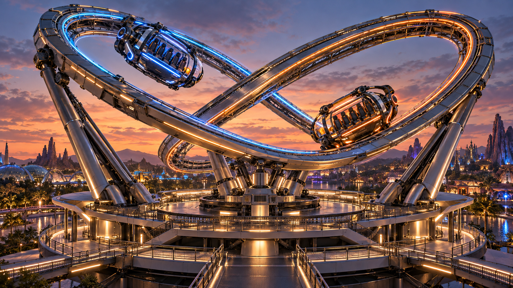

TWIN RIFT
双子星裂隙
V2.0
原效果图
暮色园区
⛶
☰
双环交错追逐式全姿态游乐设施
双子星裂隙
独立轨道 · 双舱追逐 · 主动滚转
全景
跟随 A 舱
乘员视角
机构细节
俯视
拖动旋转 · 双指缩放
正在建立双环航程
准备三维场景与机构

双子星裂隙 · 概念设计参考
原效果图展示。三维运行模式需要浏览器图形支持。
文档中的造型参考
双子星裂隙 · 原效果图
×
三维版按横向斜交双环、金属包覆、分层底座与暮色园区精修，运行参数对应 V2.0 方案。